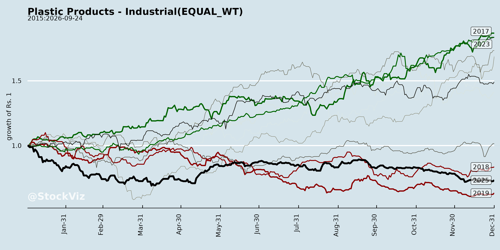
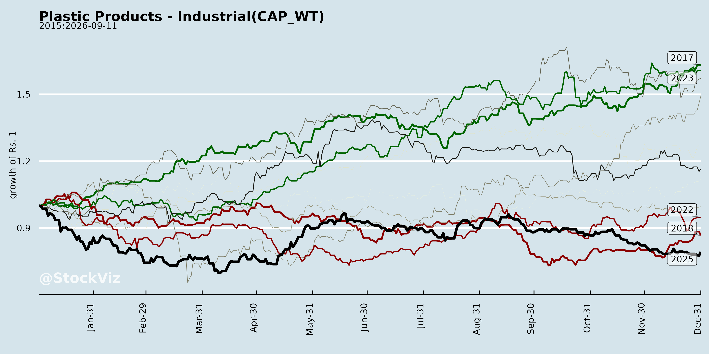
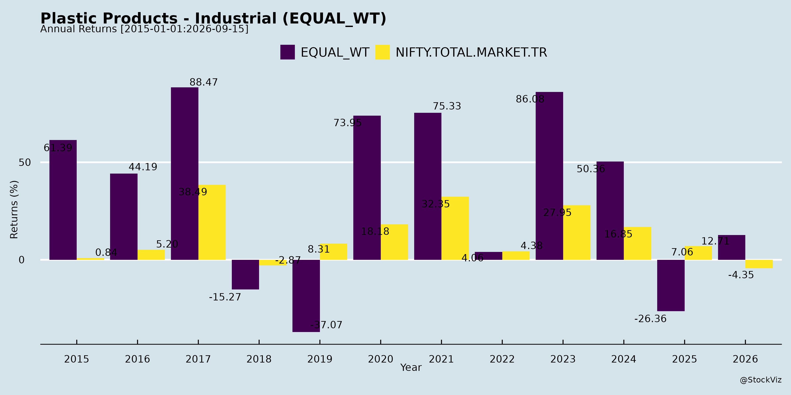
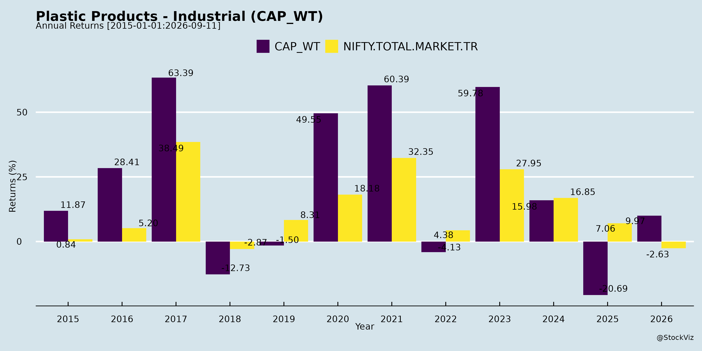
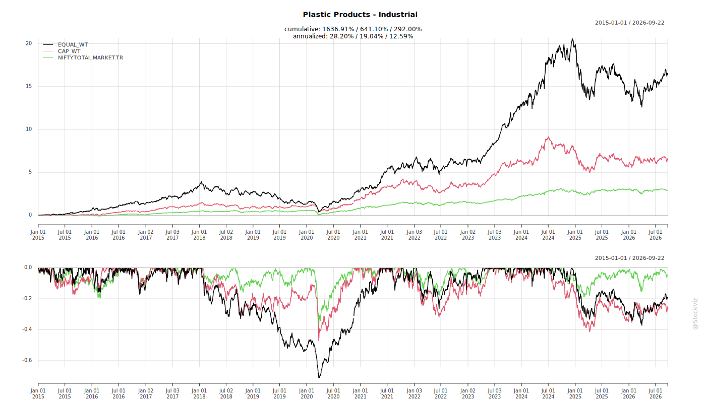
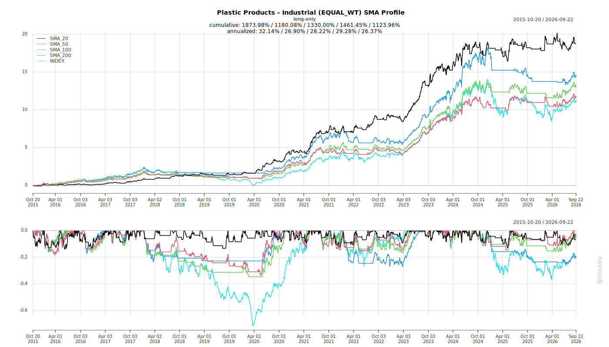
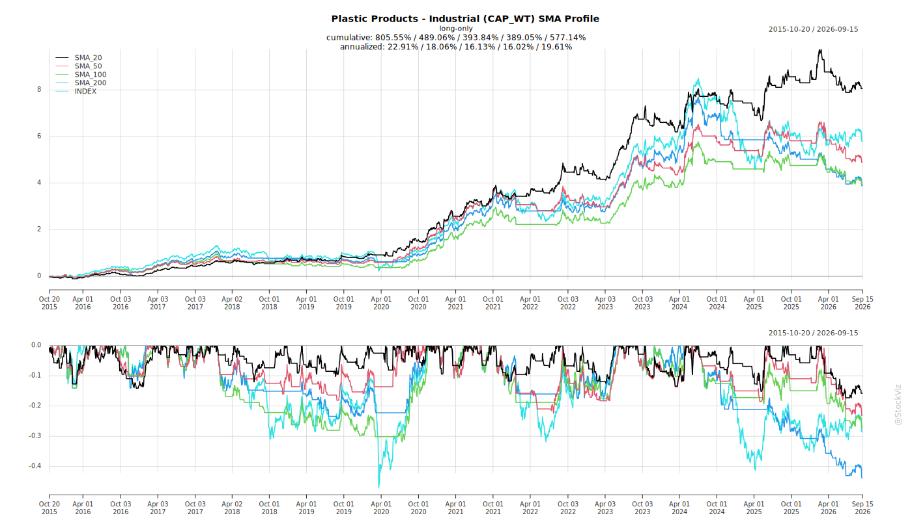
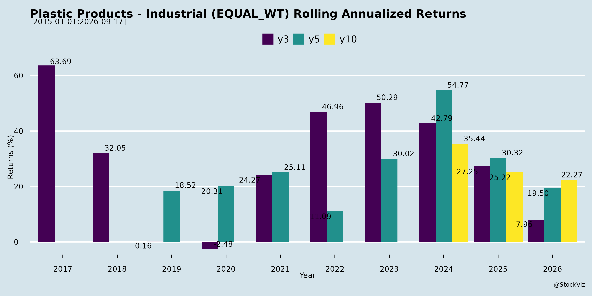
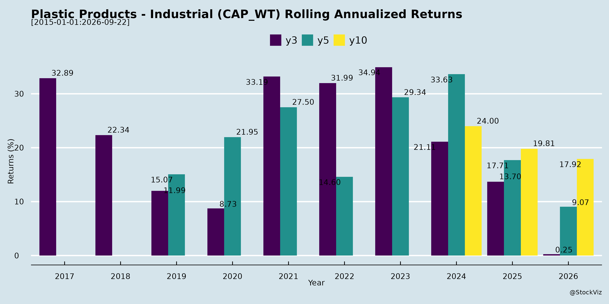

asof: 2025-11-30
Indian Plastic Products - Industrial Sector Analysis
Overview: The sector, dominated by PVC pipes, fittings, irrigation, and industrial plastics (key players: Supreme, Astral, Finolex, Prince Pipes, Apollo Pipes, Jain Irrigation, Kriti Industries, etc.), faced a challenging H1 FY26 due to extended monsoons, PVC price volatility, and destocking. However, companies reported resilient margins via mix shifts (e.g., CPVC/non-agri) and capacity readiness for H2 recovery. Consensus points to ADD imposition as a pivot, with mid-single to low-double-digit FY26 volume growth amid infra/real estate tailwinds.
Headwinds
Tailwinds
Growth Prospects
Key Risks
Sector Outlook: Cautious optimism; H2 inflection via ADD/infra, but FY26 growth capped at 5-10% volumes. FY27+ robust (12-15%+) on capex fruition, non-agri shift. Focus: CPVC/infra diversification to de-risk agri monsoon exposure. ROCE recovery hinges on 75%+ util. and stable RM.
asof: 2025-12-01
Summary Analysis: Indian Plastic Products - Industrial Sector
(Based on Q2/H1 FY26 earnings, announcements, and filings from key players like Supreme Industries, Kingfa Science, Jain Irrigation, Prince Pipes, Apollo Pipes, etc. Focus on pipes, fittings, packaging, industrial components, and allied products. Sector context: Plastics piping dominant (~60-70% revenue for leaders), impacted by agri/infra cycles, raw material volatility, and capacity expansions.)
Headwinds (Challenges Pressuring Performance)
Tailwinds (Supportive Factors)
Growth Prospects (Medium-Term Opportunities)
Key Risks
Overall Sector Outlook: Moderately positive for H2 FY26/FY27 with 10-15% volume growth potential driven by agri recovery, exports, and expansions. EBITDA margins stabilizing at 14-15% if raw mats steady. Near-term caution on monsoon/infra, but resilient via diversification (pipes ~70%, industrials/packaging growing). Leaders like Supreme/Jain well-positioned via capex/tech.
asof: 2025-11-30
Summary Analysis: Indian Plastic Products - Industrial Sector (Pipes, Fittings, Irrigation Systems)
The sector, dominated by players like Supreme Industries, Astral, Finolex, Prince Pipes, Apollo Pipes, Jain Irrigation, Kriti Industries, and others, faced a challenging H1 FY26 marked by monsoon disruptions and PVC volatility. However, underlying tailwinds like capacity expansions, product diversification, and impending policy support position it for recovery. Below is a structured analysis based on the provided disclosures and earnings transcripts (Aug-Nov 2025).
Headwinds (Key Challenges Observed)
Tailwinds (Positive Factors)
Growth Prospects
Key Risks
| Risk Category | Details | Impacted Companies | Mitigation |
|---|---|---|---|
| Policy/Delay Risks | ADD postponement; JJM/govt spend delays (infra pipes). | All (esp. Jain EPC receivables ₹900 Cr by FY27) | Diversification to private projects/retail. |
| Demand/Macro | Persistent weak agri/infra if rabi disappoints; real estate slowdown. | Finolex, Kriti, Apollo | Non-agri shift (44% mix, Finolex Q2). |
| Raw Material | PVC volatility (EDC/VCM spreads narrow); import surge pre-ADD. | Prince, Apollo | Backward integration discussions (Finolex). |
| Execution | New product ramps (bathware losses ₹10 Cr H1, Prince); geo-expansion delays. | Prince, Apollo, Kriti | Capacity ahead of demand; tech (DMS/SFA, Apollo). |
| Financial | Debt servicing (Jain FY27 ₹200 Cr); WC cycle extension (Prince 85 days). | Jain, Kriti | Strong cash flows (Finolex ₹2,360 Cr surplus). |
| Competition | Price aggression (peers gaining share); unorganized resilience. | Kriti (sharper decline) | Brand/product innovation (CPVC tie-ups). |
Overall Outlook: Sector bottomed out; H2 FY26 recovery via ADD/restocking (15-20% volume upside). Long-term: 12-15% CAGR supported by urbanization/infra (₹10 Tn pipes mkt by 2030), but near-term volatility persists. Leaders with capacity/debt discipline (Finolex, Prince) best positioned. Investors should monitor ADD notification (mid-Nov) and Q3 volumes.
asof: 2025-12-01
Summary Analysis: Indian Plastic Products - Industrial Sector (Focus: Pipes, Fittings, Packaging, Films)
The sector, dominated by PVC/HDPE pipes, fittings, protective packaging, and films (e.g., Supreme Industries, Astral, Finolex, Prince Pipes, Apollo Pipes, Jain Irrigation, Prakash Pipes), faced a challenging H1 FY26 amid weak demand and raw material volatility. However, resilient volume growth, capacity expansions, and strategic diversification signal recovery potential. Below is a structured analysis based on the provided Q2/H1 FY26 press releases.
Headwinds (Key Challenges)
Tailwinds (Supportive Factors)
Growth Prospects
Key Risks
Overall Sector Snapshot: H1 FY26 muted (revenue/vol. flat-to-down, margins compressed), but strategic expansions and H2 recovery optimism intact. Leaders like Supreme/Astral show resilience via diversification; watch PVC prices and monsoon for inflection. Positive long-term on infra/agri tailwinds.
Copyright © 2023 SAS Data Analytics Pvt. Ltd. All rights reserved.